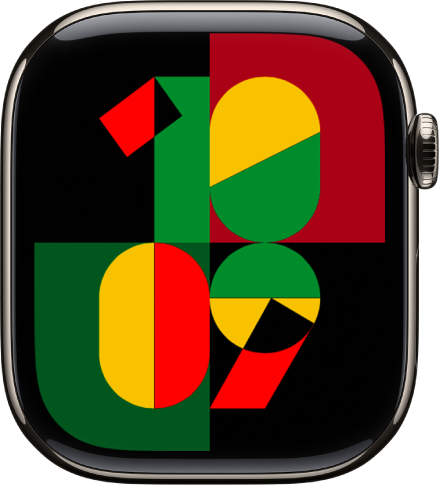

这款表盘的灵感源自马赛克的创作过程，象征着黑人群体的蓬勃生机和团结力量。
下方的文件数包括本地化资源。固件名称键能确认包的归属；组件的圆屏点击边界、亮屏过渡与 AOD 对照均待设备验证。
原始包 已解析属性表 Mach-O 方法与成员 ARM64 汇编 解出的图集
.strings × 88 .plist × 2 .car × 1 无扩展名 × 1
NTKExtragalacticFaceBundle.bundleEXTRAGALACTIC_FACE_DESCRIPTIONorangegreenpurplegraygoldcreamblackbluepinkred色组与设备条件 Extragalactic.color.plist 共享色组与默认值
-[NTKExtragalacticBackgroundView setTritiumProgress:];-[NTKExtragalacticContentView tritium_didTransitionToTritiumOn];-[NTKExtragalacticContentView tritium_didTransitionToTritiumOff];-[NTKExtragalacticContentView tritium_transitionToTritiumOnWithProgress:];-[NTKExtragalacticContentView tritium_transitionToFrameSpecifier:];-[NTKExtragalacticContentView tritium_transitionToTritiumOffWithProgress:];-[NTKExtragalacticContentView tritium_willTransitionToTritiumOnToFrameSpecifier:];-[NTKExtragalacticContentView tritium_willTransitionToTritiumOffFromFrameSpecifier:];-[NTKExtragalacticContentView _applyTritiumOnProgress:];-[NTKExtragalacticDigitsView setTritiumProgress:];-[NTKExtragalacticDigitsView randomizeTritiumAnimation];+[NTKExtragalacticFace tritium_burnInFaceName];-[NTKExtragalacticFaceView tritium_didTransitionToTritiumOn];-[NTKExtragalacticFaceView tritium_didTransitionToTritiumOff];-[NTKExtragalacticFaceView tritium_transitionToTritiumOnWithProgress:];-[NTKExtragalacticFaceView tritium_createFaceAnimator];-[NTKExtragalacticFaceView tritium_transitionToFrameSpecifier:];-[NTKExtragalacticFaceView tritium_transitionToTritiumOffWithProgress:];-[NTKExtragalacticFaceView tritium_timeViews];-[NTKExtragalacticFaceView tritium_willTransitionToTritiumOnToFrameSpecifier:];-[NTKExtragalacticFaceView tritium_willTransitionToTritiumOffFromFrameSpecifier:];-[NTKExtragalacticGlyphShapes _updateTritiumTransform];-[NTKExtragalacticGlyphShapes glyphTritiumAnimations];-[NTKExtragalacticGlyphShapes setGlyphTritiumAnimations:];-[NTKExtragalacticGlyphShapes setTritiumAnimationProgress:];-[NTKExtragalacticGlyphShapes tritiumAnimationProgress];-[NTKExtragalacticContentView tritium_didTransitionToTritiumOn];-[NTKExtragalacticContentView tritium_didTransitionToTritiumOff];-[NTKExtragalacticContentView tritium_transitionToTritiumOnWithProgress:];-[NTKExtragalacticContentView tritium_transitionToFrameSpecifier:];-[NTKExtragalacticContentView tritium_transitionToTritiumOffWithProgress:];-[NTKExtragalacticContentView setOverrideDate:duration:];-[NTKExtragalacticContentView tritium_willTransitionToTritiumOnToFrameSpecifier:];-[NTKExtragalacticContentView tritium_willTransitionToTritiumOffFromFrameSpecifier:];-[NTKExtragalacticDigitsView randomizeTritiumAnimation];-[NTKExtragalacticFaceView tritium_didTransitionToTritiumOn];-[NTKExtragalacticFaceView tritium_didTransitionToTritiumOff];-[NTKExtragalacticFaceView _applyTransitionFraction:fromOption:toOption:forCustomEditMode:slot:];-[NTKExtragalacticFaceView tritium_transitionToTritiumOnWithProgress:];-[NTKExtragalacticFaceView tritium_createFaceAnimator];-[NTKExtragalacticFaceView tritium_transitionToFrameSpecifier:];-[NTKExtragalacticFaceView tritium_transitionToTritiumOffWithProgress:];-[NTKExtragalacticFaceView screenWillTurnOnAnimated:];-[NTKExtragalacticFaceView setOverrideDate:duration:];-[NTKExtragalacticFaceView tritium_willTransitionToTritiumOnToFrameSpecifier:];-[NTKExtragalacticFaceView screenDidTurnOffAnimated:];-[NTKExtragalacticFaceView tritium_willTransitionToTritiumOffFromFrameSpecifier:];+[NTKExtragalacticGlyphAnimation _randomTranslationForCorner:];+[NTKExtragalacticGlyphAnimation randomAnimationForCorner:device:];-[NTKExtragalacticGlyphAnimation debugDescription];-[NTKExtragalacticGlyphAnimation setRotation:];-[NTKExtragalacticGlyphAnimation scale];-[NTKExtragalacticGlyphAnimation setScale:];-[NTKExtragalacticGlyphAnimation rotation];-[NTKExtragalacticGlyphAnimation translate];-[NTKExtragalacticGlyphAnimation setTranslate:];-[NTKExtragalacticGlyphAnimation initWithRotation:translate:];-[NTKExtragalacticGlyphShapes _transformForAnimation:progress:];-[NTKExtragalacticGlyphShapes glyphTritiumAnimations];-[NTKExtragalacticGlyphShapes setGlyphTritiumAnimations:];-[NTKExtragalacticGlyphShapes setTritiumAnimationProgress:];-[NTKExtragalacticGlyphShapes tritiumAnimationProgress];-[NTKExtragalacticColorPalette backgroundBottomLeft];-[NTKExtragalacticColorPalette backgroundTopLeft];-[NTKExtragalacticColorPalette backgroundTopRight];-[NTKExtragalacticColorPalette blackOverlapAndBackground];-[NTKExtragalacticColorPalette glyphColor0];-[NTKExtragalacticColorPalette glyphColor1];-[NTKExtragalacticColorPalette glyphColor2];-[NTKExtragalacticBackgroundView shuffleBackgroundColors];-[NTKExtragalacticColorPalette swatch];-[NTKExtragalacticColorPalette init];+[NTKExtragalacticColors identityColorForCorner:];+[NTKExtragalacticColors identityColorForGlyphColor:];+[NTKExtragalacticColors lutFilterFromPalette:];-[NTKExtragalacticContentView setPalette:];-[NTKExtragalacticContentView _applyPalette];-[NTKExtragalacticContentView palette];-[NTKExtragalacticContentView initWithFrame:device:palette:];-[NTKExtragalacticDigitLoader _glyphColorFromString:];-[NTKExtragalacticFace _numberOfOptionsForCustomEditMode:slot:];-[NTKExtragalacticFace _defaultOptionForCustomEditMode:slot:];-[NTKExtragalacticFace _indexOfOption:forCustomEditMode:slot:];-[NTKExtragalacticFace _optionAtIndex:forCustomEditMode:slot:];-[NTKExtragalacticFaceView createFaceColorPalette];-[NTKExtragalacticFaceView _applyTransitionFraction:fromOption:toOption:forCustomEditMode:slot:];-[NTKExtragalacticFaceView _applyBreathingFraction:forCustomEditMode:slot:];-[NTKExtragalacticFaceView _applyOption:forCustomEditMode:slot:];-[NTKExtragalacticFaceView _applyPalette:];-[NTKExtragalacticFaceView _applyRubberBandingFraction:forCustomEditMode:slot:];-[NTKExtragalacticFaceView extragalacticPalette];-[NTKExtragalacticGlyphDescription setColor:];-[NTKExtragalacticGlyphDescription color];-[NTKExtragalacticGlyphDescription initWithName:color:style:];-[NTKExtragalacticGlyphShapes _transformAtGlyphColor:];-[NTKExtragalacticGlyphShapes setPath:forGlyphColor:];-[NTKExtragalacticGlyphShapes setShapeLayer:atGlyphColor:];+[NTKExtragalacticLayoutHelper allCorners];+[NTKExtragalacticLayoutHelper colForCorner:];+[NTKExtragalacticLayoutHelper digitCenterPositionForCorner:unifiedGlyphSize:cornerFrame:];+[NTKExtragalacticLayoutHelper frameForCorner:screenBounds:];+[NTKExtragalacticLayoutHelper rowForCorner:];